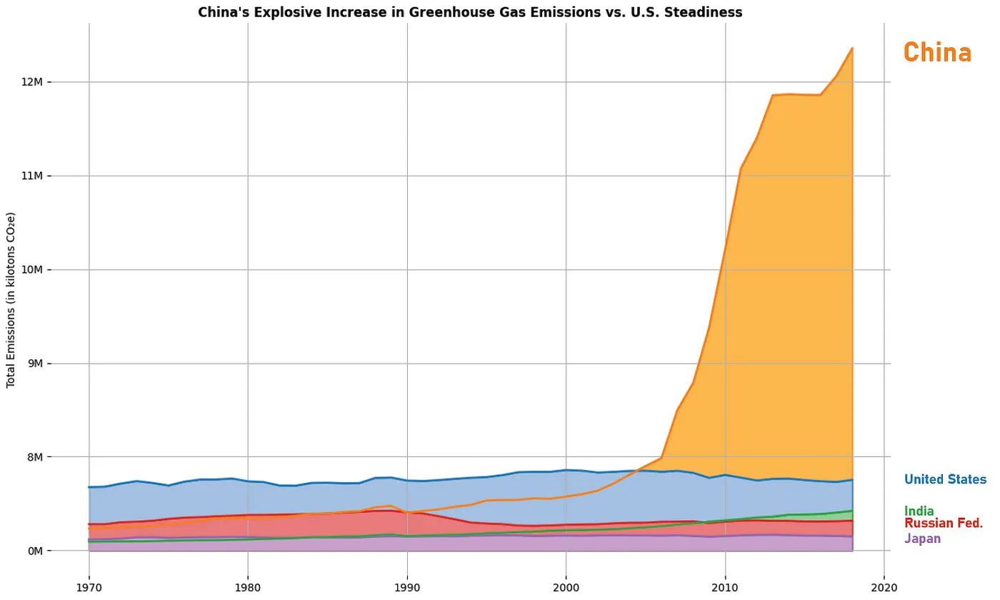

Experience
Research Lab Assistant, A.I Calendar
In this research lab, we created and tested a calendar that would first record particpants talking about what they did throughout their day and secondly utitlize artificial intelligence to analyze and annotate the transcript and apply it onto a calendar, allowing users to see how they've been spending time in their days. Annotations included location, type of activity, and other people present, and we were able to set up data visualizations to show participants how they spent their time in terms of location, category, people, etc.... Within this lab, I used Qualtrics to create several surveys, particpated in interviews, and created a master CSV file that documented all the transcripts, several annotation categories, and mistakes that the A.I created. From there, I was able to use python to generate hard statistics and data visualizations for the thesis for the final thesis.
Data Design and Manipulation of Greenhouse Gasses Project
Utilizing the Altair library, my team and I came up with several visualizations that all tell a strong narrative revolving around greenhouse gas emissions. We heavily prototyped and wireframed each visualization, and created a few that were purposefully deceptive in their nature. Our process can be seeing here
The Analysis of Sugar Group Companies Project
Analyzing the information ecosystem of Sugar Group Companies by conducting extensive interviews on several of their employees, we wanted to better understand how each internal stakeholders plays a role within their company, and came up with several ideas on how to better the company. You can download our presentation here.
Data Analysis of Video Game Sales Project
Using Python to navigate through several APIs and CSV files, I gathered, organized, and showcased collective data to display hard statistics and visualizations combing over video game sales across all consoles.
The Socially-Distributed Cognition of Mod Pizza Project
By watching and looking at the ecosystem of information and how food orders flow throughout the restaurant, I came up with several pros and cons for their system and created this presentation on how they might be able to fix their problems
Bayou Bites and Boats Project
By sifting through large datasets, we researched and analyzed different locations, institutions, and business ventures and came up with an ideal plan for a new business in the New Orleans area. Our reported findings can be seen in this presentation